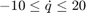

PGRID - Real parameter defined on a grid of points
Contents
Syntax
A = pgrid(Name,GridData) A = pgrid(Name,GridData,RateBounds)
Description
A = pgrid(Name,GridData,RateBounds) specifies the name, grid points, and ratebounds for a time-varying real parameter where:
- Name is a character string specifying the name.
- GridData is a N-by-1 column vector of sorted values that specify the parameter grid.
- RateBounds is a 1-by-2 row vector specifying lower and upper bounds on the derivative of the parameter with respect to time. Set RateBounds(1)=-inf and/or RateBounds(2)=+inf to denote an unbounded rate of change. RateBounds are optional, and a two argument call: A = pgrid(Name,GridData) will set them to a default value of [-inf,+inf].
The pgrid object describes a time-varying real parameter in the grid-based LPV framework. It is defined on a grid of real values, as seen in Figure 1. The rate bounds of the parameter specify how fast the parameter's value can change with time.
Figure 1: The pgrid object.
pgrid is used to specify parameter varying matrices and systems using analytical expressions. In this regard it is analogous to the ureal object in the Robust Control Toolbox, which is used to construct uncertain matrices and systems.
Example: Defining a pgrid
Define a time-varying real parameter with values between and ratebounds . The following commands model as a pgrid with 30 grid points: 1,2,3,...,30. The first argment to \texttt{pgrid} is the name of the parameter, the second is a vector of grid points, and the third is a vector containing the upper and lower limits on the parameter's rate of variation.
q = pgrid('q',1:30, [-10 20])
Gridded real parameter "q" with 30 points in [1,30] and rate bounds [-10,20].
Properties of pgrid
pgrid objects have the following properties:
| Name | string specifying the name of the parameter. |
| GridData | N-by-1 column vector of sorted values that specify the parameter grid. |
| Range | 1-by-2 row vector specifying the lower and upper bounds on the parameter values. |
| RateBounds | 1-by-2 row vector specifying lower and upper bounds on the derivative of the parameter with respect to time. |
Example: Accessing and setting pgrid properties
The following commands will create a pgrid object and demonstrate how to access and set its properties:
Define a parameter with default rate bounds ()
p = pgrid('p',1:10)
Gridded real parameter "p" with 10 points in [1,10] and rate bounds [-Inf,Inf].
Change the name of the paramter from p to z
p.Name = 'z'
Gridded real parameter "z" with 10 points in [1,10] and rate bounds [-Inf,Inf].
Set the ratebounds to be +/- 5
p.RateBounds = [-5 5]
Gridded real parameter "z" with 10 points in [1,10] and rate bounds [-5,5].
Retreive the grid points that define the parameter
p.GridData
ans =
1
2
3
4
5
6
7
8
9
10